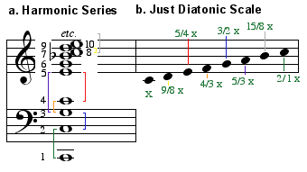
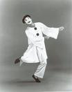

28/The Phonograph The Toy That Shrank the National Chest
The
phonograph, which owes its origin to the electrical telegraph and the telephone, had not
manifested its basically electric form and function until the tape recorder released it
from its mechanical trappings. That the world of sound is essentially a unified field of
instant relationships lends it a near resemblance to the world of electromagnetic waves.
This fact brought the phonograph and radio into early association.
Just as Plato feared that writing would atrophy
human memory, Sousa felt that the phonograph would diminish the vital capacity developed
by natural singing.
Just how
obliquely the phonograph was at first received is indicated in the observation of John
Philip Sousa, the brass-band director and composer. He commented: "With the
phonograph vocal exercises will be out of vogue! Then what of the national throat? Will it
not weaken? What of the national chest? Will it not shrink?"
One fact
Sousa had grasped: The phonograph is an extension and amplification of the voice that may
well have diminished individual vocal activity, much as the car had reduced pedestrian
activity.
Like the
radio that it still provides with program content, the phonograph is a hot medium. Without
it, the twentieth century as the era of tango, ragtime, and jazz would have had a
different rhythm. But the phonograph was involved in many misconceptions, as one of its
early names—gramophone—implies. It was conceived as a form of auditory writing (gramma-letters).
It was also called "graphophone," with the needle in the role of pen. The
idea of it as a "talking machine" was especially popular. Edison was delayed in
his approach to the solution of its problems by considering it at first as a
"telephone repeater"; that is, a storehouse of data from the telephone, enabling
the telephone to "provide invaluable records, instead of being the recipient of
momentary and fleeting communication." These words of Edison, published in the North
American Review of June, 1878, illustrate how the then recent telephone invention
already had the power to color thinking in other fields. So, the record player had to be seen as a kind of
phonetic record of telephone conversation. Hence, the names "phonograph" and
"gramophone."
Behind the immediate popularity of the
phonograph was the entire electric implosion that gave such new stress and importance to
actual speech rhythms in music, poetry, and dance alike. Yet the phonograph was a
machine merely. It did not at first use an electric motor or circuit. But in providing a
mechanical extension of the human voice and the new ragtime melodies, the phonograph was
propelled into a central place by some of the major currents of the age. The fact of
acceptance of a new phrase, or a speech form, or a dance rhythm is already direct evidence
of some actual development to which it is significantly related. Take, for example, the
shift of English into an interrogative mood, since the arrival of "How about
that?" Nothing could induce people to begin suddenly to use such a phrase over and
over, unless there were some new stress, rhythm, or nuance in interpersonal relations that
gave it relevance.
The improvisational nature of modern inquiry signifies the abandonment of specialist
goals and lineal problem-solving. A ridged, controlling personality is not programmed to
exploit the opportunities provided by serendipitous discovery.
It was while
handling paper tape, impressed by Morse Code dots and dashes, that Edison noticed the
sound given off when the tape moved at high speed resembled "human talk heard
indistinctly." It then occurred to him that indented tape could record a telephone
message. Edison became aware of the limits of
lineality and the sterility of specialism as soon as he entered the electric field.
"Look," he said, "it's like this. I start here with the intention of
reaching here in an experiment, say, to increase the speed of the Atlantic cable; but when
I've arrived part way in my straight line, I meet with a phenomenon, and it leads me off
in another direction and develops into a phonograph." Nothing could more dramatically
express the turning point from mechanical explosion to electrical implosion. Edison's own
career embodied that very change in our world, and he himself was often caught in the
confusion between the two forms of procedure.
It has been suggested that the stages of human
evolution can be detected in the development of the human embryo and fetus. Similarly, the
seven-note diatonic scale can be heard, at least subliminally, in the harmonic overtones
of a struck note.

The start of plenary retrieval.
It was just
at the end of the nineteenth century that the psychologist Lipps revealed by a kind of
electric audiograph that the single clang of
a bell was an intensive manifold containing all possible symphonies. It was
somewhat on the same lines that Edison approached his problems. Practical experience had
taught him that embryonically all problems
contained all answers when one could discover a means of rendering them explicit.
In his own case, his determination to give the phonograph, like the telephone, a direct
practical use in business procedures led to his neglect of the instrument as a means of
entertainment. Failure to foresee the phonograph as a means of entertainment was really a
failure to grasp the meaning of the electric revolution in general. In our time we are
reconciled to the phonograph as a toy and a solace; but press, radio, and TV have also
acquired the same dimension of entertainment. Meantime, entertainment pushed to an extreme
becomes the main form of business and politics. Electric media, because of their total
"field" character, tend to eliminate the fragmented specialties of form and
function that we have long accepted as the heritage of alphabet, printing, and
mechanization. The brief and compressed history of the phonograph includes all phases of
the written, the printed, and the mechanized word. It was the advent of the electric tape
recorder that only a few years ago released the phonograph from its temporary involvement
in mechanical culture. Tape and the l.p.
record suddenly made the phonograph a means of access to all the music and speech of the
world.
The mechanical universe is intrinsically sad
because it is merely a simulacrum of the organic. It never comes to life.

Pierrot
The mechanical age was bipolar, alternating between manic jazz and somber
blues.
Before
turning to the l.p. and tape-recording revolution, we should note that the earlier period
of mechanical recording and sound reproduction had one large factor in common with the
silent picture. The early phonograph produced a brisk and raucous experience not unlike
that of a Mack Sennett movie. But the undercurrent of mechanical music is strangely sad.
It was the genius of Charles Chaplin to have captured for film this sagging quality of a
deep blues, and to have overlaid it with jaunty jive and bounce. The poets and painters
and musicians of the later nineteenth century all insist on a sort of metaphysical melancholy as latent in the great
industrial world of the metropolis. The Pierrot figure is as crucial in the poetry
of Laforgue as it is in the art of Picasso or the music of Satie. Is not the mechanical at
its best a remarkable approximation to the organic? And is not a great industrial
civilization able to produce anything in abundance for everybody? The answer is
"Yes." But Chaplin and the Pierrot poets and painters and musicians pushed this
logic all the way to reach the image of Cyrano de Bergerac, who was the greatest lover of
all, but who was never permitted the return of his love. This weird image of Cyrano, the
unloved and unlovable lover, was caught up in the phonograph cult of the blues. Perhaps it
is misleading to try to derive the origin of the blues from Negro folk music; however,
Constant Lambert, English conductor-composer, in his Music Ho!, provides an account
of the blues that preceded the jazz of the post-World War I. He concludes that the great
flowering of jazz in the twenties was a popular response to the highbrow richness and
orchestral subtlety of the Debussy-Delius period. Jazz would seem to be an effective
bridge between highbrow and lowbrow music, much as Chaplin made a similar bridge for
pictorial art. Literary people eagerly accepted these bridges, and Joyce got Chaplin into Ulysses
as Bloom, just as Eliot got jazz into the rhythms of his early poems.
Chaplin's
clown-Cyrano is as much a part of a deep melancholy as Laforgue's or Satie's Pierrot art.
Is it not inherent in the very triumph of the mechanical and its omission of the human?
Could the mechanical reach a higher level than the talking machine with its mime of voice
and dance? Do not T. S. Eliot's famous lines about the typist of the jazz age capture the
entire pathos of the age of Chaplin and the ragtime blues?
Prufrock embodies the zeitgeist of
the mechanical age and its spiritual emptiness, in his inability to grasp a triumphant
moment.
He is like the traveler in Zeno's paradox, who approaches but never quite
reaches his goal, because he is aways stopping at the halfway mark; he cannot shake his
overpowering sense of ordinariness, the conviction that he is unworthy of anything more
than a humble fate, bereft of spiritual grace and atonement.
It is easier to understand Eliot's conversion to the Anglican Church after
reading Prufrock.
When lovely woman stoops to folly and
Paces about her room again, alone,
She smoothes her hair with automatic hand,
And puts a record on the gramophone.
Read as a Chaplin-like
comedy, Eliot's Prufrock makes ready sense. Prufrock is the complete Pierrot, the little
puppet of the mechanical civilization that was about to do a flip into its electric phase.
It would be
difficult to exaggerate the importance of complex mechanical forms such as film and
phonograph as the prelude to the automation of human song and dance. As this automation of
human voice and gesture had approached perfection, so the human work force approached
automation. Now in the electric age the assembly line with its human hands disappears, and
electric automation brings about a withdrawal of the work force from industry. Instead of
being automated themselves—fragmented in task and function—as had been the
tendency under mechanization, men in the
electric age move increasingly to involvement in diverse jobs simultaneously, and to the
work of learning, and to the programming of computers.
The Victor Talking Machine
This
revolutionary logic inherent in the electric age was made fairly clear in the early
electric forms of telegraph and telephone that inspired the "talking machine."
These new forms that did so much to recover the vocal, auditory, and mimetic world that
had been repressed by the printed word, also inspired the strange new rhythms of "the
jazz age," the various forms of syncopation and symbolist discontinuity that, like
relativity and quantum physics, heralded the end of the Gutenberg era with its smooth,
uniform lines of type and organization.
The 'noble savage' was a picturesque invention
of Rousseau's that bore little resemblance to reality. But it was from the vantage of
this fantasy that Rousseau launched his attack on civilization, which he characterized as
'an artificial pageant of blood and butcheries' perpetrated by mad priests.
What
Rousseau failed to realize was that his paradisiacal vision of primitive nobility,
realized in the artifice of the clockwork waltz, was as much a symptom of corruption as
the civilized institutions he deplored. His critique of civilization and his embrace of
Romantic barbarity led later to savage assaults on human decency, masquerading as
movements of liberation—a pageant of blood and butcheries he had not bargained for.
The word
"jazz" comes from the French jaser, to chatter. Jazz is, indeed, a form
of dialogue among instrumentalists and dances alike. Thus it seemed to make an abrupt
break with the homogeneous and repetitive rhythms of the smooth waltz. In the age of
Napoleon and Lord Byron, when the waltz was a new form, it was greeted as a barbaric
fulfillment of the Rousseauistic dream of the noble savage. Grotesque as this idea now
appears, it is really a most valuable clue to the dawning mechanical age. The impersonal
choral-dancing of the older, courtly pattern was abandoned when the waltzers held each
other in a personal embrace. The waltz is precise, mechanical, and military, as its
history manifests. For a waltz to yield its full meaning, there must be military dress.
"There was a sound of revelry by night" was how Lord Byron referred to the
waltzing before Walterloo. To the eighteenth century and to the age of Napoleon, the
citizen armies seemed to be an individualistic release from the feudal framework of
courtly hierarchies. Hence the association of
waltz with noble savage, meaning no more than freedom from status and hierarchic
deference. The waltzers were all uniform and equal, having free movement in any
part of the hall. That this was the Romantic
idea of the life of the noble savage now seems odd, but the Romantics knew as
little about real savages as they did about assembly lines.
Though jazz product may be arid
and artistically inferior to formal music, experienced as process it is more
rewarding to the musicians than playing notes from a page of sheet music.
Unlike
classical composition, jazz improvisation happens in real time. Jazz musicians do not stop
to correct their riffs, but plunge ahead, composing in the existential moment.
In our own
century the arrival of jazz and ragtime was also heralded as the invasion of the
bottom-wagging native. The indignant tended to appeal from jazz to the beauty of the mechanical and repetitive waltz
that had once been greeted as pure native dancing. If jazz is considered as a break with
mechanism in the direction of the discontinuous, the participant, the spontaneous and
improvisational, it can also be seen as a return to a sort of oral poetry in which
performance is both creation and composition. It is a truism among jazz performers that
recorded jazz is "as stale as yesterday's newspaper." Jazz is alive, like
conversation; and like conversation it depends upon a repertory of available themes. But
performance is composition. Such performance insures maximal participation among players
and dancers alike. Put in this way, it becomes obvious at once that jazz belongs in that
family of mosaic structures that reappeared in the Western world with the wire services.
It belongs with symbolism in poetry, and with the many allied forms in painting and in
music.
The tradition of the troubadour lost in the sixteenth century, made a dramatic comeback in
the twentieth, in popular idioms like folk, country, rock, rhythm and blues, and soul;
just as the classical genre began a descent into a finicky academic sterility.
The bond
between the phonograph and song and dance is no less deep than its earlier relation to
telegraph and telephone. With the first printing of musical scores in the sixteenth
century, words and music drifted apart. The separate virtuosity of voice and instruments
became the basis of the great musical developments of the eighteenth and nineteenth
centuries. The same kind of fragmentation and specialism in the arts and sciences made
possible mammoth results in industry and in military enterprise, and in massive
cooperative enterprises such as the newspaper and the symphony orchestra.
Certainly
the phonograph as a product of industrial, assembly-line organization and distribution
showed little of the electric qualities that had inspired its growth in the mind of
Edison. There were prophets who could foresee the great day when the phonograph would aid
medicine by providing a medical means of discrimination between "the sob of hysteria
and the sigh of melancholia … the ring of whooping cough and the hack of the
consumptive. It will be an expert in insanity, distinguishing between the laugh of the
maniac and drivel of the idiot.… It will accomplish this feat in the anteroom, while the
physician is busying himself with his last patient." In practice, however, the
phonograph stayed with the voices of the Signori Foghornis, the basso-tenores,
robusto-profundos.
Recording
facilities did not presume to touch anything so subtle as an orchestra until after the
First War. Long before this, one enthusiast looked to the record to rival the photograph
album and to hasten the happy day when "future generations will be able to condense
within the space of twenty minutes a tone-picture of a single lifetime: five minutes of a
child's prattle, five of the boy's exultations, five of the man's reflections, and five
from the feeble utterances of the deathbed." James Joyce, somewhat later, did better.
He made Finnegans Wake a tone poem that condensed in a single sentence all the
prattlings, exultations, observations, and remorse of the entire human race. He could not
have conceived this work in any other age than the one that produced the phonograph and
the radio.
It was radio
that finally injected a full electric charge into the world of the phonograph. The radio
receiver of 1924 was already superior in sound quality, and soon began to depress the
phonograph and record business. Eventually, radio restored the record business by
extending popular taste in the direction of the classics.
The real
break came after the Second War with the availability of the tape recorder. This meant the
end of the incision recording and its attendant surface noise. In 1949 the era of electric
hi-fi was another rescuer of the phonograph business. The hi-fi quest for "realistic
sound" soon merged with the TV image as part of the recovery of tactile experience.
For the sensation of having the performing instruments "right in the room with
you" is a striving toward the union of the audile and tactile in a finesse of fiddles
that is in large degree the sculptural experience. To be in the presence of performing
musicians is to experience their touch and handling of instruments as tactile and kinetic,
not just as resonant. So it can be said that hi-fi is not any quest for abstract effects
of sound in separation from the other senses. With hi-fi, the phonograph meets the TV
tactile challenge.
Actually the spacious sound stage provided by
stereophonic and Dolby Digital audio is more akin to the perception of depth of
stereoscopic vision.
Stereo
sound, a further development, is "all-around" or "wrap-around" sound.
Previously sound had emanated from a single point in accordance with the bias of visual
culture with its fixed point of view. The hi-fi changeover was really for music what
cubism had been for painting, and what symbolism had been for literature; namely, the
acceptance of multiple facets and planes in a single experience. Another way to put it is
to say that stereo is sound in depth, as TV is the visual in depth.
'Any study in depth is a study in in breadth.'
The realism of new media tends to eliminate artificial categories of taste like highbrow
and lowbrow. Faithful audio reproduction highlights the beauty of sound itself.
An
critical passage condensing much of UM. Insight is the perception of relationships and an
immersion in process. POV is incomplete knowledge. Henry James said: "Try to be one
of those persons on whom nothing is lost." A mere postman can be more in touch with
the human condition than a philosopher.
Perhaps it
is not very contradictory that when a medium becomes a means of depth experience the old
categories of "classical" and "popular" or of "highbrow" and
"lowbrow" no longer obtain. Watching a blue-baby heart operation on TV is an
experience that will fit none of the categories. When l.p. and hi-fi and stereo arrived, a
depth approach to musical experience also came in. Everybody lost his inhibitions about
"highbrow," and the serious people lost their qualms about popular music and
culture. Anything that is approached in
depth acquires as much interest as the greatest matters. Because "depth" means
"in interrelation," not in isolation. Depth means insight, not point of view;
and insight is a kind of mental involvement in process that makes the content of the item
seem quite secondary. Consciousness itself is an inclusive process not at all dependent on
content. Consciousness does not postulate consciousness of anything in particular.
The maxim, 'if you are given lemons, make
lemonade,' is not a stoical acceptance of bad luck, but recommends enrichment by
participating in process. This is the wisdom of the Buddha, who understands everything.
Plenary
retrieval resulted in a more cosmopolitan and broader conception of music as process, with
less emphasis on specific styles.
With regard
to jazz, l.p. brought many changes, such as the cult of "real cool drool,"
because the greatly increased length of a single side of a disk meant that the jazz band
could really have a long and casual chat among its instruments. The repertory of the 1920s
was revived and given new depth and complexity by this new means. But the tape recorder in
combination with l.p. revolutionized the repertory of classical music. Just as tape meant
the new study of spoken rather than written languages, so it brought in the entire musical
culture of many centuries and countries. Where before there had been a narrow selection
from periods and composers, the tape recorder, combined with l.p., gave a full musical
spectrum that made the sixteenth century as available as the nineteenth, and Chinese folk
song as accessible as the Hungarian.
A brief
summary of technological events relating to the phonograph might go this way:
The
telegraph translated writing into sound, a fact directly related to the origin of both the
telephone and phonograph. With the telegraph, the only walls left are the vernacular walls
that the photograph and movie and wirephoto overleap so easily. The electrification of
writing was almost as big a step into the non-visual and auditory space as the later steps
soon taken by telephone, radio, and TV.
The telephone: speech without walls.
The phonograph: music hall without walls.
The photograph: museum without walls.
The electric light: space without walls.
The movie, radio, and TV: classroom without walls.
Man the
food-gatherer reappears incongruously as information-gatherer. In this role, electronic
man is no less a nomad than his paleolithic ancestors.